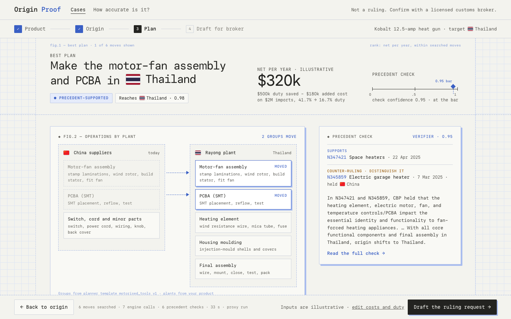
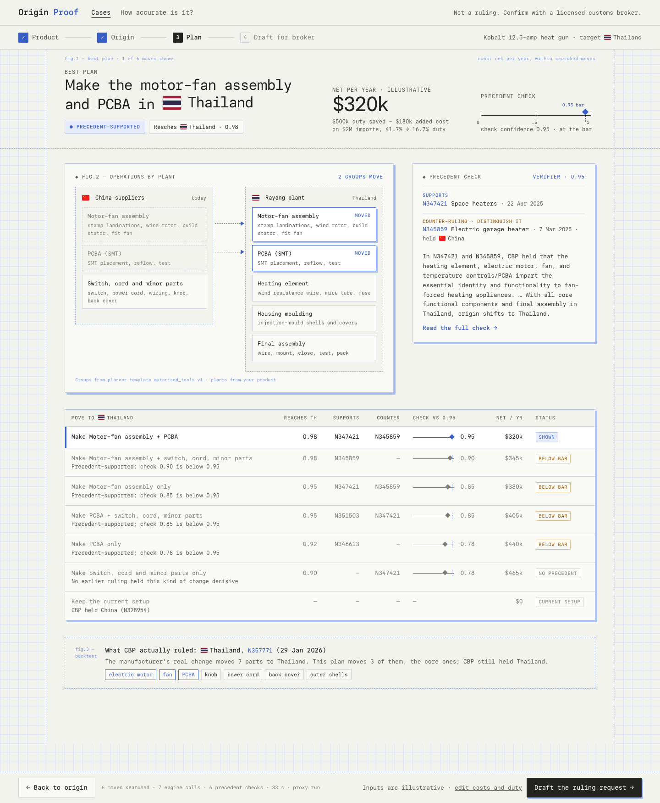
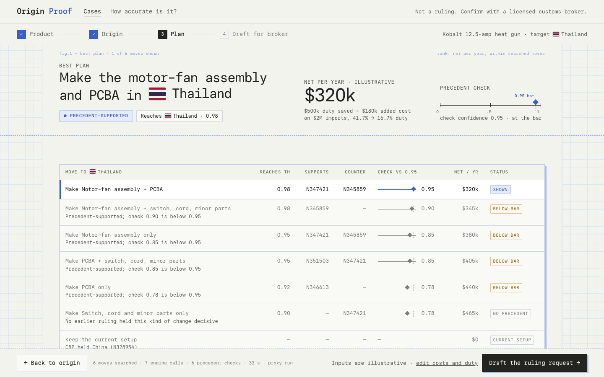
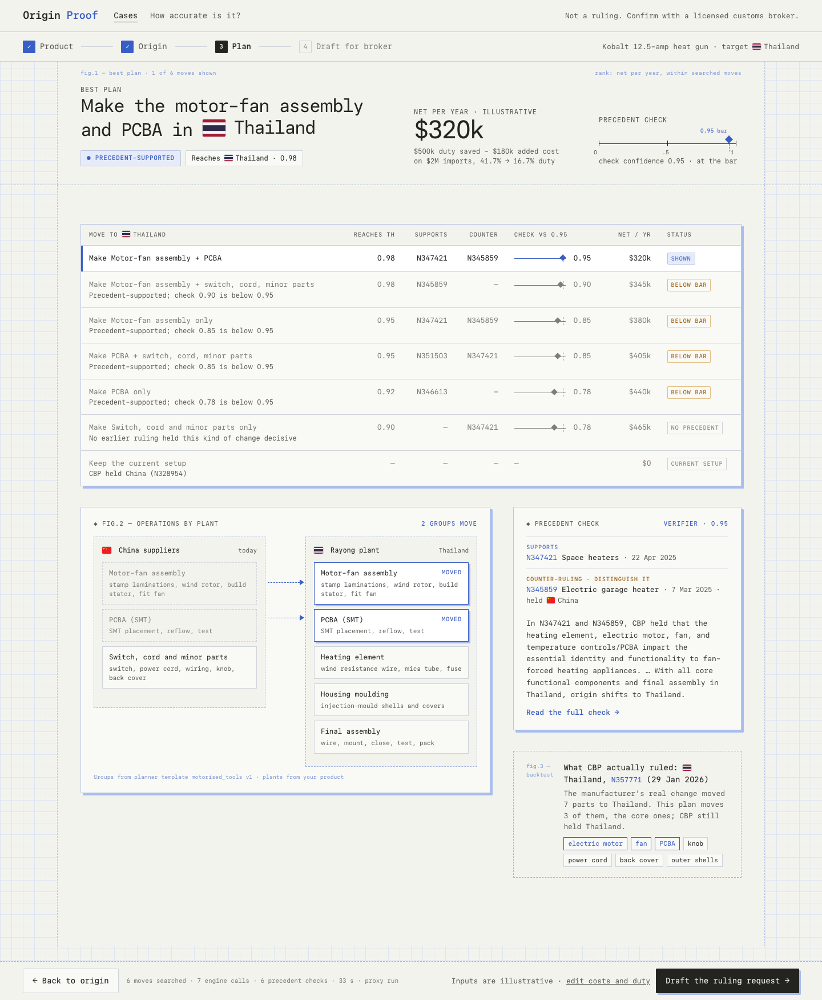
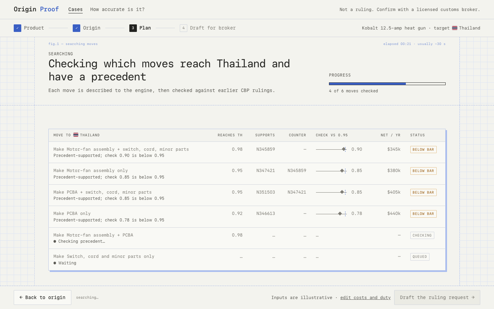

From the recorded heat-gun plan run (eval/results/plan-heatgun-2022-local-litellm.json, proxy): the best plan, all six searched moves with their outcomes, the precedent check, the economics (illustrative inputs: $2M imports, 41.7% → 16.7% duty) and the backtest against CBP's real ruling N357771. Plant groups come from the planner template; plants from the product. This run predates rejection_kind, so the row labels are derived from each row's reason text.
Best-plan band (the move, precedent-supported, reaches Thailand 0.98, net $320k/yr, check confidence as a ruler at the 0.95 bar) · fig.2 operations by plant (moved groups in blue, arrows from China) · precedent check (supporting ruling, counter-ruling to distinguish, verifier reasoning) · all searched moves table with check-vs-bar mini rulers and status tags · fig.3 backtest · footer with search stats and editable inputs.




